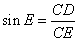
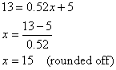
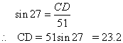

Distance from a point to a line (Coordinate Geometry)
Method 3: Using Trigonometry
Given: A
line with an equation,
and a point with known coordinates,
the distance from the point to the line can be found using trigonometry
Try this
Drag the point C, or the line using the sliders on the right. Note the distance from the point to the line.
You can also drag the origin point at (0,0).
NOTE: This method does not work if the line is
horizontal
or
vertical (where the slope is undefined).
In these cases use the the method described
here.
In the figure above, we have a given line with the equation that describes it, and a point C with known coordinates.
We want the
perpendicular distance from C to the line
at D. To find the distance CD:
-
Draw a horizontal line segment from C until it intersects the line at E, forming the right triangle CDE.
-
Find the coordinates of E The y coordinate of E must be the same as C,
and the x coordinate is given by substituting that y into the line equation and solving for x.
-
Find the length of CE. By subtracting the x-coordinates of C and E we find the length of the line segment CE.
-
Find the angle E.
This angle is the slope of the line in degrees. (See Slope of a line.)
| angle = |arctan m| |
| where: |
| m |
is the slope part of the equation y=mx+b |
| arctan |
is the trigonometry inverse tan function. See Trigonometry Overview
It means "find the angle whose tan is m" |
| | | |
the vertical bars mean "absolute value" - make it positive even if it calculates to a negative. |
-
Find the distance CD.

We know E and CE so we can solve for CD - the distance from the point to the line.
Example
In the figure above, click 'reset'. This example shows how the values in the figure are calculated.
-
Draw a horizontal line segment from C until it intersects the line at E, forming the right triangle CDE.
-
Find the coordinates of E The y coordinate of E must be the same as C which is 13,
and the x coordinate is given by substituting y=13 into the line equation and solving for x:

So E has the coordinates (15,13).
-
Find the length of CE. By subtracting the x-coordinates of C and E we find the length of the line segment CE to be 51.
-
Find the angle E.
This angle is the slope of the line in degrees. (See Slope of a line.)
angle E = |arctan 0.52| =27° (rounded to nearest degree)
-
Find the distance from the point C to the line (the length of CD).

Things to try
Test your understanding of this method by doing the following:
- In the figure above, click 'reset', and 'hide details'
- Drag the point C to any location and drag the two sliders to create a new line equation.
- Calculate the distance from the point to the line.
- Click on 'show details' to see how you did.
Other methods
This is one way to find the distance from a point to a line. Others are:
Limitations
In the interest of clarity in the applet above, the coordinates are rounded off to integers and the lengths rounded to one decimal place.
This can cause calculatioons to be slightly off.
For more see
Teaching Notes
Other Coordinate Geometry topics
(C) 2011 Copyright Math Open Reference.
All rights reserved